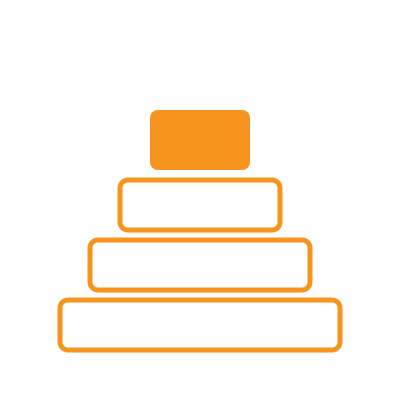

סטודיו למחקר · מפגש 3
איך מחקר מתקדם
תקשורת מחקר ומאמרים
פרופ' נמרוד טלמון · 9.12.2026 / 16.12.2026
תואר שני · הנדסת תעשייה וניהול · אוניברסיטת בן-גוריון בנגב · תשפ"ז

קצת עליי
תל אביב←
Google←
מכון ויצמן←
ברלין←
מכון ויצמן←
בן-גוריון
דוקטורט בתאוריה של מדעי המחשב
ומשם: איך קבוצות מחליטות ביחד 🙂
איך בני אדם וסוכני AI מחליטים טוב יותר ביחד?
סבב פתיחה
על מה אתם עובדים, או מה מעניין אתכם?

לכל מחקר יש אותו שלד
שאלת מחקרמה אנחנו רוצים לדעת?
←
מה חדש?מה כבר ידוע, ומה שונה אצלנו (סקירת ספרות)
←
מתודולוגיהאיך נדע שזה נכון?
←
תוצאהמה גילינו?
על "איך נדע שזה נכון?" יש שלוש תשובות שונות
שלוש דרכים לדעת שמשהו נכון
מתמטיקה
נכון כי הוכח
ראיה: הוכחה
מדע
טענה שאפשר להפריך
ראיה: ניסוי ונתונים
Popper
הנדסה
עובד תחת אילוצים
ראיה: ביצועים ותועלת
Simon
בהנדסת תעשייה וניהול יש את שלושתם
מתמטיקה
חקר ביצועים תיאורטי
משפט והוכחה
מדע
מחקר אמפירי / התנהגותי
ניסוי, סקר, נתונים
הנדסה
תכנון מערכות
מערכת + השוואת ביצועים
כל אחד: ראיה אחרת, מאמר אחר
Optimizing Viscous Democracy
Armstrong, Alouf-Heffetz & Talmon · GAIW 2024
Optimizing Viscous Democracy (PDF)
תורכם (מי שרוצה)
המחקר שלכם, בארבעה צעדים
שאלה · מה חדש · איך · מה תהיה התוצאה
המדע מתקדם בתוך קהילה
כל אחד עם המחקר שלו, אבל כולנו קהילה
המחקר מתקדם בתוך קהילה
בלי תקשורת, המחזור נעצר
אנשים בקהילה מתקשרים
שאלהמה עוד לא ידוע?
←
מחקרהוכחה, ניסוי, נתונים
←
תקשורתמאמר, הרצאה, שיחה
←
ביקורת והמשךאחרים בודקים וממשיכים
↩ שאלות חדשות
מהמסדרון ועד מאמר שפיט
שיחה עם המנחהרעיונות גולמיים
סמינר קבוצהתוצאות ראשונות
כנסמשוב מהיר
Preprintעוד לא שפוט
מאמר שפיטנבדק וסופי
לא פורמלי · מהירפורמלי · איטי · קבוע
ארבע במות, ארבעה קצבים
סדנה
קצר וידידותי
גם לרעיון בתהליך
כנס
מאמר מלא, דדליין קבוע
מציגים בהרצאה
ז׳ורנל
ארוך, כמה סבבי שיפוט
הגרסה הסופית
arXiv
לא שפוט, עולה מיד
חותמת זמן על הרעיון
כל חלק במאמר עונה על שאלה
תקציר שיווק
מה עשינו ומה מצאנו?
מבוא
מה הבעיה, ולמה היא חשובה?
עבודות קשורות
מה כבר ידוע, ומה חדש?
מודל / מתודולוגיה
איך ניגשנו לבעיה?
דיון
מה זה אומר, ומה המגבלות?
ההתחלה והסוף הם גם מכירות ושיווק 🙂
דוגמה
Attention Is All You Need
Vaswani et al., 2017
קוראים רק: כותרת, תקציר, איור 1, טבלת התוצאות
מה הרעיון האחד?
arxiv.org/abs/1706.03762
מה רואים שם
תקציר: בעיה, רעיון, תוצאה
רעיון אחד פשוט, מוכר בצורה ברורה
מה קורה למאמר אחרי ההגשה
הגשהבפורמט של הבמה
←
עורך / יו״רמשבץ שופטים
←
שופטים2–4 מומחים, לרוב אנונימיים
←
החלטהקבלה, תיקונים או דחייה
←
גרסה סופיתמתקנים ומפרסמים
דחייה היא חלק רגיל מהדרך 🙂
למה דווקא מאמר שפיט?
רשומה קבועה
אפשר לצטט גם בעוד 20 שנה
קריירה
מלגות, משרות, קידום
טענה הופכת לידע כשאחרים בודקים אותה
לא "אני משוכנע", אלא "תבדקו בעצמכם"
Merton, 1942: ספקנות מאורגנת
לעמוד על כתפי ענקים
כל מאמר נשען על הקודמים, והתזה שלכם היא עוד קומה

איך זה נראה אצלי (DBLP)
[j] ז׳ורנל
[c] כנס
[i] arXiv, לא שפוט
מה זה נותן לכם
גם פרק מהתזה יכול להיות מאמר. שווה לשאול את המנחה מתי
שיפוט עמיתים מבפנים
דע את האויב 🙂

על מה שופט מסתכל
ארבע שאלות. המאמר שלכם צריך לענות על כולן
לשופט אין זמן
תקציר
←
מבוא
←
איורים
←
החלטה
כל השאר
הוא מחליט מוקדם
לכן: העיקר בא ראשון
דע את האויב 🙂
בואו נשפוט משהו
בזוגות
College Admissions and the Stability of Marriage
Gale & Shapley, 1962
הפעם אתם השופטים
Gale & Shapley, 1962 (PDF)
טופס שיפוט
6החלטה (קבלה / קבלה חלשה / דחייה חלשה / דחייה) ורמת ביטחון
דיון
הייתם מקבלים?
ולמה כיף לקרוא אותו?
איך עונים לביקורות
מה אנחנו רוצים
שהשופט ישתכנע
סוגרים מעגל
התקציר של התזה שלכם
שאלהמשפט אחד
←
מה חדשמשפט אחד
←
איךמשפט אחד
←
מה תהיה התוצאהמשפט אחד
ארבעה משפטים. בלי מילים שהקורא עוד לא מכיר
שלושה דברים הביתה
1
מחקר מתקדם בקהילה, דרך תקשורת
2
מאמר עונה על שאלות. העיקר בא ראשון
3
שולחים: גם פרק מהתזה יכול להיות מאמר
סטודיו למחקר · מפגש 3
תודה 🙂
שאלות?
פרופ' נמרוד טלמון · 9.12.2026 / 16.12.2026
תואר שני · הנדסת תעשייה וניהול · אוניברסיטת בן-גוריון בנגב · תשפ"ז